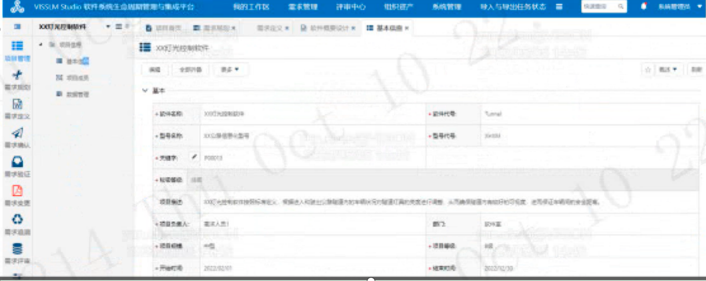
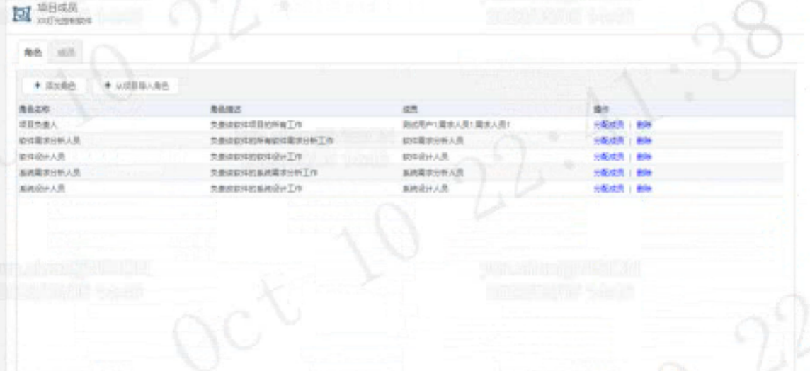
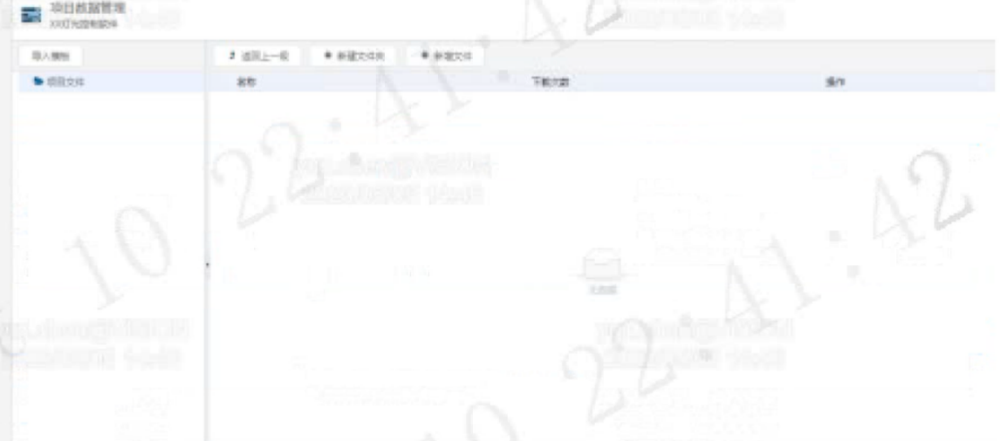
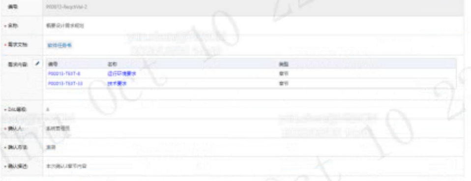
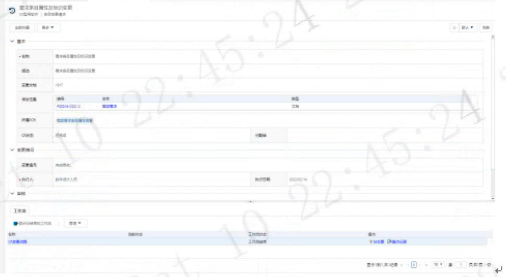

Bruce Wayne
我是个有钱人，晚上偶尔出去散步。
构建现代网页的基石
结构 (Structure)
表现 (Presentation)
行为 (Behavior)
<img><h1><button>浏览器按照从上到下的顺序流式渲染内容：

Bruce Wayne
我是个有钱人，晚上偶尔出去散步。
虽然用
<div>
配合样式也能做成标题的样子，但我们推荐使用正确的标签：
<h1> 知道这是页面的重点。
<nav> 知道这是导航栏，通过
<button> 知道这是可以点击的。
通过选择器选中 HTML 标签，并应用属性。
/* 选中卡片容器 */
.profile-card {
background: white;
border-radius: 12px; /* 圆角 */
box-shadow: 0 4px 10px rgba(0,0,0,0.1); /* 阴影让它浮起来 */
text-align: center; /* 让文字居中 */
width: 300px;
}
/* 选中里面的按钮 */
.profile-card button {
background-color: #3b82f6; /* 蓝色背景 */
color: white;
border: none;
padding: 10px 24px;
cursor: pointer; /* 鼠标放上去变小手 */
}
以前我们要把两个东西并排很难，现在很简单：
.container {
display: flex; /* 开启弹性布局模式 */
justify-content: center; /* 主轴居中（水平） */
align-items: center; /* 交叉轴居中（垂直） */
gap: 20px; /* 元素之间的间距 */
}
CSS 让网页从“文本文档”变成了“精美的应用程序界面”。
我们需要监听用户的点击，并执行逻辑。
// 1. 获取元素：在文档中找到那个按钮
const btn = document.querySelector('button');
const title = document.querySelector('h2');
// 2. 监听事件：当用户点击时...
btn.addEventListener('click', () => {
// 3. 执行逻辑：修改 HTML 内容和 CSS 样式
btn.textContent = '已发送请求...';
btn.style.backgroundColor = '#ccc'; // 按钮变灰
// 模拟简单的交互反馈
alert(`已向 ${title.textContent} 发送好友申请！`);
});
JavaScript 并不直接操作 HTML 文本文件，它操作的是内存中的 DOM 树。
用户点击 ➡️ 浏览器触发 JS 事件 ➡️ JS 修改 DOM 节点 ➡️ 浏览器重新绘制页面
| 技术 | 角色 | 如果你只有它... |
|---|---|---|
| HTML | 名词 (骨架) | 页面只是纯文本，像 Word 文档，虽然丑但能看。 |
| CSS | 形容词 (皮肤) | 虽然好看，但按钮按了没反应，像一张精美的海报。 |
| JavaScript | 动词 (肌肉) | 页面变得智能，可以交互，成为真正的 Web App。 |
渐进式 JavaScript 框架 (The Progressive Framework)
“不只是写代码，更是在描述你的想法。”
原生 JS (命令式) 就像做菜，必须一步步教浏览器怎么做：
// 命令式 (Imperative)
const div = document.querySelector('#app');
div.innerText = 'Hello'; // 手动找到元素，手动修改
Vue (声明式) 就像点菜，你告诉它结果，它自己去处理过程：
{{ message }}
document.querySelector 了！
Vue 将一个组件的代码封装在一个
.vue 文件中，结构清晰：
在 JS 中，变量变了界面是不会动的。Vue 3 使用
ref() 来包裹变量，让它变成“响应式”的。
import { ref } from 'vue';
// ref 让普通数字变成了“可被监听”的数据
const count = ref(0);
function increment() {
// 在 JS 中修改值需要加 .value
count.value++;
// 🪄 此时，Vue 自动检测到变化，并更新页面上所有用到 count 的地方
}
为什么是 Vue 3？
Object.defineProperty (有局限性)。
Vue 在 HTML 中提供了一套特殊的属性（以 v- 开头）来处理常见的 DOM 逻辑：
| v-if / v-else | 条件渲染 |
<div v-if="isLogin">欢迎回来</div>
|
| v-for | 列表循环 |
<li v-for="item in list">{{ item.name
}}</li>
|
| v-on (@) | 事件监听 |
<button @click="submit">提交</button>
|
| v-model | 双向绑定 (表单神器) |
<input v-model="username">(输入框变->数据变；数据变->输入框变) |
在大型项目中，我们希望复用逻辑（比如“获取鼠标位置”）。
// mouse.js (自定义 Hook)
import { ref, onMounted, onUnmounted } from 'vue'
export function useMouse() {
const x = ref(0)
const y = ref(0)
function update(event) {
x.value = event.pageX
y.value = event.pageY
}
onMounted(() => window.addEventListener('mousemove', update))
onUnmounted(() => window.removeEventListener('mousemove', update))
return { x, y }
}
在组件中使用：
这是 Vue 3 比 Vue 2 更有利于大型项目维护的关键。
Vue 不仅仅是一个核心库，它有一整套官方维护的工具链：
下一代前端构建工具。极速启动，瞬间热更新。
官方路由管理器。构建单页面应用 (SPA) 必不可少。
Vue 3 推荐的状态管理库。替代 Vuex，更简单，TypeScript 支持更好。
基于 Vue 3 的桌面端组件库
Element Plus 就像是一个装满了预制件的工具箱。
npm install element-plus --save
import { createApp } from 'vue'
import ElementPlus from 'element-plus'
import 'element-plus/dist/index.css'
import App from './App.vue'
const app = createApp(App)
app.use(ElementPlus) // ✨ 注入灵魂
app.mount('#app')
主要按钮
圆角成功
不要再为了 `float` 或 `flex` 怎么对齐而掉头发了。Element Plus 提供了 24栅格系统。
侧边栏 (1/3)
主要内容区域 (2/3)
最耗时的表单验证、标签对齐、控件样式，一行代码解决。
立即创建
form，数据自动同步。
Excel 级别的表格体验。只需传入一个数组 (Array)，它自动渲染。
编辑
✨
更多黑科技：
只需要加一个属性，就能实现sortable(排序)、fixed(固定列)、selection(多选)。
不要用那个丑陋的浏览器原生 alert() 了！
import { ElMessage } from 'element-plus'
// 轻轻地飘过一个提示
ElMessage.success('恭喜，保存成功！')
ElMessage.error('哎呀，出错了。')
import { ElMessageBox } from 'element-plus'
const deleteItem = () => {
ElMessageBox.confirm('确定删除吗？不可恢复。')
.then(() => {
// 用户点了确定
})
.catch(() => {
// 用户点了取消
})
}
从 0 到 1 构建现代应用：
HTML/CSS/JS
理解底层原理，万物之源。
框架 / 逻辑层
数据驱动，组件化，高效开发。
UI 库 / 表现层
美观现成的积木，专注业务逻辑。
不需要从头看完 HTML/CSS/JS 的几百页文档。
策略：
了解基本概念（盒子模型、DOM、变量）即可，语法细节交给 AI。
基本信息
| *软件名称 | XX灯光控制软件 | *软件代号 | Tunnel |
|---|---|---|---|
| *型号名称 | XX公路信息采集型号 | *型号代号 | JK001 |
| *关键字 | P00013 ✏️ | ||
| *标签信息 | |||
| 项目描述 | XX灯光控制软件按照标准定义，根据进入和驶出公路隧道内的车辆以及对隧道灯光的亮度进行调整，从而确保隧道内有良好的可见度，进而保证车辆行驶的安全与顺畅。 | ||
| *项目负责人 | 需求人员1 | 部门 | 软件室 |
| *项目规模 | 中型 | *项目等级 | B级 |
| *开始时间 | 2022/02/01 | *结束时间 | 2022/12/30 |
项目成员
| 角色名称 | 角色描述 | 成员 | 操作 |
|---|---|---|---|
| 项目负责人 | 负责组织软件项目的所有工作 | 测试用户1, 需求人员1, 需求人员... | 分配成员 | 删除 |
| 软件需求分析人员 | 负责组织软件的所有软件需求分析工作 | 软件需求分析人员 | 分配成员 | 删除 |
| 软件设计人员 | 负责组织软件的软件设计工作 | 软件设计人员 | 分配成员 | 删除 |
| 系统需求分析人员 | 负责组织软件的系统需求分析工作 | 系统需求分析人员 | 分配成员 | 删除 |
| 系统设计人员 | 负责组织软件的系统设计工作 | 系统设计人员 | 分配成员 | 删除 |
数据管理
| 名称 | 下载次数 | 操作 |
|---|---|---|
| 无数据 | ||
需求确认和验证的表单基本一致，这里以需求确认为例
| 编号 | P00013-ReqChVal-2 | |||||||||
| *名称 | 概要设计需求规划 | |||||||||
| *需求文档 | 软件任务书 | |||||||||
| 需求内容 ✏️ |
|
|||||||||
| *DAL等级 | A | |||||||||
| *确认人 | 系统管理员 | |||||||||
| *确认方法 | 审查 | |||||||||
| *确认描述 | 本次确认章节内容 |
| 编号 | P00013-ReqChValReview-1 | ||||||||||||||
| *名称 | 概要设计需求规划 | ||||||||||||||
| *评审描述 | 评审概要设计需求规划阶段的输出 | ||||||||||||||
| *DAL等级 | B | *需求主管 | 系统管理员 | ||||||||||||
| *评审文档 | 软件需求 | ||||||||||||||
| 评审对象 |
|
||||||||||||||
| *评审人员 | 系统管理员 | ||||||||||||||
需求条目变更申请的表单
| ▼ 基本 | |||||||||||
| *名称 | 需求条目属性及标识设置 | ||||||||||
| 描述 | 需求条目属性及标识设置 | ||||||||||
| 所属文档 | rj-v7 | ||||||||||
| 修改范围 |
|
||||||||||
| 所属SQA | 项目级软件质量管理员 | CR状态 | 待验证 | ||||||||
| CR对象 | 待验证 | 对象数 | |||||||||
| ▼ 变更/通知 | |||||||||||
| 变更原因 | 内部优化 | ||||||||||
| *执行人 | 软件项目人员 | 执行日期 | 2022-02-14 | ||||||||
| ▼ 工作流 | |||||||||||
|
|||||||||||
| ID | 检查项内容 (Checklist Item) | 当前状态 (Status) |
|---|---|---|
| 01 | Does the requirement have one "SHALL"... | ☑ 通过 (Pass) |
| 02 | Does the requirement contain a descrip... | ☑ 通过 (Pass) |
| 03 | Is the requirement written as a complete... | ☑ 通过 (Pass) |
| 04 | Is the requirement unique? | ☑ 通过 (Pass) |
| 05 | Is the requirement unambiguous? | ☑ 通过 (Pass) |
| 06 | Can the requirement be verified? | ☒ 不通过 (Fail) |
| 07 | Does the requirement describe a softwar... | ☑ 通过 (Pass) |
| 08 | Are tolerances provided in the requireme... | ☑ 通过 (Pass) |
| 09 | If algorithms are used in the requiremen... | ☑ 通过 (Pass) |
| 10 | Has the requirement been assessed by a... | ☑ 通过 (Pass) |
| 11 | If not derived, is the requirement: the sys... | ☑ 通过 (Pass) |
| 12 | If not a derived requirement, are upstre... | ☑ 通过 (Pass) |
| 13 | If a derived requirement, is the "Derived... | ☑ 通过 (Pass) |
| 14 | If a derived requirement, is it supported... | ☑ 通过 (Pass) |
deadline才是第一生产力。大家3周之内完成，有AI的辅助真的不困难